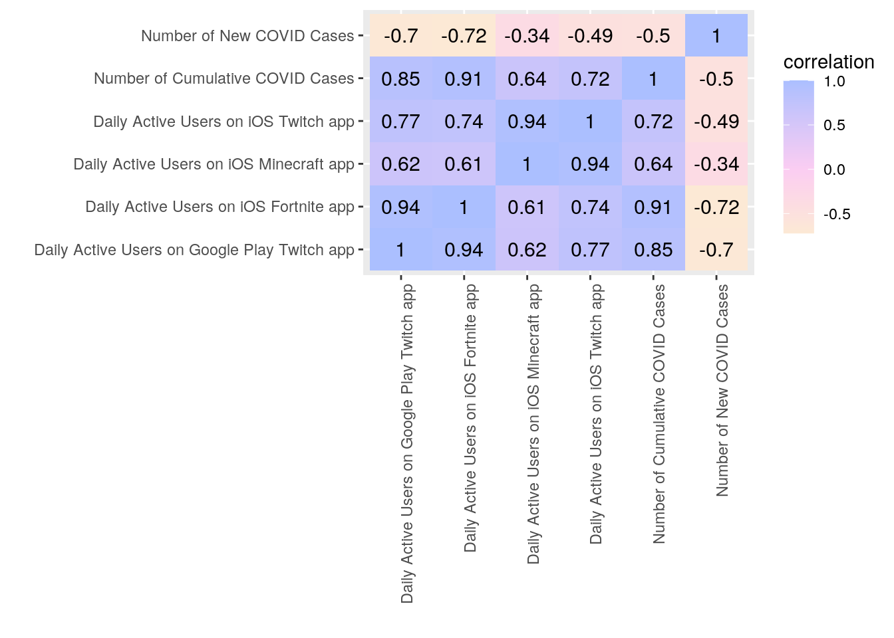

January 1, 0001
knitr::opts_chunk$set(echo = TRUE, eval = TRUE, fig.align = "center", warning = F, message = F,
tidy=TRUE, tidy.opts=list(width.cutoff=60), R.options=list(max.print=100))Introduction
For my project, I initially wanted to see what kind of effect COVID-19, particularly the lockdowns, had affected people’s everyday lives and activities. The datasets I chose were posted on www.statista.com and they’re all based in Norway. The COVID cases, new and cumulative, were both published by Connor Stewart, a researcher who focuses on health and pharmaceuticals in Europe, and the data was sourced from Folkehelseinstituttet (FHI), the Institute of Public Health in Norway. Both COVID cases datasets collected daily numbers from February 21, 2020 when the first COVID case was recorded, until March 24, 2021 when the data collection concluded nad subsequently published on March 26, 2021. The datasets for the daily active users (DAU) on different apps were published by J. Clement, a research lead focusing on gaming and the internet. They cooporated with Airnow Data, a mobile app analytics, optimization and market research platform. The 3 datasets collected DAU from the Twitch app, a livestreaming platform aimed for gaming, the popular battle royale game, Fortnite, and the sandbox game, Minecraft, from March 1 to June 1, 2020, and the data was posted on www.statista.com on January 29, 2021.
All 5 of these datasets contained dates and the number of cases, or DAU, for that day. They were very simple and tidy, which is why I had to collect more than 2 datasets, making sure they were from Norway with the appropriate dates. I was very fortunate to have found these sets of data. I can see if there’s a correlation between people being occupied with mobile apps and the rat at which COVID cases were growing. Would it be that there would be less new cases if people were at home spending time watching live streams or playing games? I think it would be very interesting to see and test those correlations, especially since in my expereince, I definately increased internet usage and gaming during the lock down.
Links to Dataset Sources
Cumulative number of coronavirus (COVID-19) cases in Norway since February 2020: https://www.statista.com/statistics/1102249/cumulative-coronavirus-cases-in-norway/
Number of new coronavirus (COVID-19) cases in Norway since February 2020, by date of report: https://www.statista.com/statistics/1102246/coronavirus-cases-development-in-norway/
Number of daily active users (DAU) of the live streaming app Twitch after the coronavirus outbreak in Norway from March 1 to June 1, 2020: https://www.statista.com/statistics/1121980/daily-active-users-of-the-twitch-app-after-the-coronavirus-outbreak-in-norway/
Number of daily active users (DAU) of the iOS Fortnite app after the coronavirus outbreak in Norway from March 1 to June 1, 2020: https://www.statista.com/statistics/1121978/daily-active-users-of-the-fortnite-app-during-the-coronavirus-outbreak-in-norway/
Number of daily active users (DAU) of the iOS Minecraft app during the coronavirus outbreak in Norway from March 1 to June 1, 2020: https://www.statista.com/statistics/1121981/daily-active-users-of-the-minecraft-app-during-the-coronavirus-outbreak-in-norway/
Merging of Datasets
library(tidyverse)## ── Attaching packages ─────────────────────────────────────── tidyverse 1.3.0 ──## ✓ ggplot2 3.3.3 ✓ purrr 0.3.4
## ✓ tibble 3.0.4 ✓ dplyr 1.0.2
## ✓ tidyr 1.1.2 ✓ stringr 1.4.0
## ✓ readr 1.4.0 ✓ forcats 0.5.0## ── Conflicts ────────────────────────────────────────── tidyverse_conflicts() ──
## x dplyr::filter() masks stats::filter()
## x dplyr::lag() masks stats::lag()library(readxl)
New_Covid_Cases <- read_excel("New Covid Cases.xlsx", sheet = "Data", col_names = FALSE, col_types = c("text", "numeric"))## New names:
## * `` -> ...1
## * `` -> ...2NewCases <- New_Covid_Cases %>% slice(-c(1, 2, 3)) %>% rename("Date" = ...1, "Number of New COVID Cases" = ...2)
Cumulative_Cases <- Cumulative_Cases <- read_excel("Cumulative Cases.xlsx", sheet = "Data", col_names = FALSE, col_types = c("text", "numeric"))## New names:
## * `` -> ...1
## * `` -> ...2CumulCases <- Cumulative_Cases %>% slice(-c(1, 2, 3)) %>% rename("Date" = ...1, "Number of Cumulative COVID Cases" = ...2)
DAU_Fortnite <- DAU_Fortnite <- read_excel("DAU Fortnite.xlsx", sheet = "Data", col_names = FALSE, col_types = c("text", "numeric"))## New names:
## * `` -> ...1
## * `` -> ...2DAU.Fortnite <- DAU_Fortnite %>% slice(-c(1, 2, 3)) %>% rename("Date" = ...1, "Daily Active Users on iOS Fortnite app" = ...2)
DAU_Twitch <- DAU_Twitch <- read_excel("DAU Twitch.xlsx", sheet = "Data", col_names = FALSE, col_types = c("text", "numeric", "numeric"))## Warning in read_fun(path = enc2native(normalizePath(path)), sheet_i = sheet, :
## Expecting numeric in C5 / R5C3: got 'iOS*'## Warning in read_fun(path = enc2native(normalizePath(path)), sheet_i = sheet, :
## Expecting numeric in D5 / R5C4: got 'Google Play'## New names:
## * `` -> ...1
## * `` -> ...2
## * `` -> ...3DAU.Twitch <- DAU_Twitch %>% slice(-c(1, 2, 3)) %>% rename("Date" = ...1, "Daily Active Users on iOS Twitch app" = ...2, "Daily Active Users on Google Play Twitch app" = ...3)
DAU_Minecraft <- DAU_Minecraft <- read_excel("DAU Minecraft.xlsx", sheet = "Data", col_names = FALSE, col_types = c("text", "numeric"))## New names:
## * `` -> ...1
## * `` -> ...2DAU.Minecraft <- DAU_Minecraft %>% slice(-c(1, 2, 3)) %>% rename("Date" = ...1, "Daily Active Users on iOS Minecraft app" = ...2)
partial.data1 <- NewCases %>% full_join(CumulCases)## Joining, by = "Date"partial.data1.2 <- partial.data1 %>% slice(-c(103:400))
partial.data1.3 <- partial.data1.2 %>% mutate(Date = sub(", 2020", "", Date)) %>% mutate(Date=str_replace(Date, "01", "1"), Date=str_replace(Date, "02", "2"), Date=str_replace(Date, "03", "3"), Date=str_replace(Date, "04", "4"), Date=str_replace(Date, "05", "5"), Date=str_replace(Date, "06", "6"), Date=str_replace(Date, "07", "7"), Date=str_replace(Date, "08", "8"), Date=str_replace(Date, "09", "9"))
partial.data2 <- DAU.Fortnite %>% full_join(DAU.Minecraft) %>% full_join(DAU.Twitch)## Joining, by = "Date"## Joining, by = "Date"fulldata <- partial.data1.3 %>% full_join(partial.data2) %>% na.omit() ## Joining, by = "Date"fulldata$Date <- as.Date(fulldata$Date, format="%b %d")
library("lubridate")##
## Attaching package: 'lubridate'## The following objects are masked from 'package:base':
##
## date, intersect, setdiff, unionfulldata$Date <- fulldata$Date %m-% years(1)
head(fulldata)## # A tibble: 6 x 7
## Date `Number of New … `Number of Cumu… `Daily Active U… `Daily Active U…
## <date> <dbl> <dbl> <dbl> <dbl>
## 1 2020-03-01 10 31 25286 22172
## 2 2020-03-02 12 43 24832 22166
## 3 2020-03-03 31 74 22928 22070
## 4 2020-03-04 33 107 23609 22036
## 5 2020-03-05 33 140 24141 21945
## 6 2020-03-06 24 164 24183 22112
## # … with 2 more variables: `Daily Active Users on iOS Twitch app` <dbl>, `Daily
## # Active Users on Google Play Twitch app` <dbl>All of the datasets were downloaded as Excel sheets, and each contained two tabs; one as an overview of the information and the actual data. I first uploaded them and imported the data sheets, then I trimmed the first few rows since they served as headers in the Excel, as well as renaming the columns appropriately. Since all the datasets contain one column for date and one column for numerical data (with the exception of the Twitch data which included two columns for iOS and Google Play), I had decided the joining variable would be the date. I used a full_join first with the COVID case related datasets to join by Date since the format of their Date was the same (partial.data1). I then sliced rows 103 to 400 because it was dates passed June 1, 2020, which was the limiting dates of the DAU datasets (partial.data1.2). I then continued to edit the joined COVID cases dataset (partial.data1.3) and mutated to replace the year with a blank (removing it) and renaming the single digit days without a zero, so it would match the date format of the DAU datasets. I used another full_join to join the Fortnite, Mincraft and Twitch DAU datasets by Date and called it partial.data2. I then used full_join to join partial.data1.3 and partial.data2 by Date and omitted all NAs so that the range of of Date would be from March 1 to June 1, 2020, and I named it fulldata. I wanted to convert the Date from a charcater class to a date class to make the visuals of plotting neater. I used as.Date(format()) on the Date column to convert it to the class date, and with library("lubridate"), subtract one year from the column since the conversion resorted to including the current year. The dropping of the dates from before March 1, 2020 and after June 1, 2020 was due to the fact that the DAU datasets did not cover those dates. I lose out on a more expansive dataset that encompasses the beginning to most recent times in Norway, but it couldn’t be helped since there would be no use for the dates that didn’t have any DAU data. At the very least, the dthere are no missing days between March 1 and June 1, 2020 in the fully merged dataset.
Untidying and Retidying of Dataset
library(tidyverse)
fulldata.untidy <- fulldata %>% pivot_longer(contains("Twitch"), names_to = "Twitch Source", values_to = "Daily Active Users on Twitch App") %>% pivot_longer(contains("COVID"), names_to = "New or Cumulative Cases", values_to = "COVID Cases")
fulldata.retidy <- fulldata.untidy %>% pivot_wider(names_from = "New or Cumulative Cases", values_from = "COVID Cases") %>% pivot_wider(names_from = "Twitch Source", values_from = "Daily Active Users on Twitch App")
head(fulldata)## # A tibble: 6 x 7
## Date `Number of New … `Number of Cumu… `Daily Active U… `Daily Active U…
## <date> <dbl> <dbl> <dbl> <dbl>
## 1 2020-03-01 10 31 25286 22172
## 2 2020-03-02 12 43 24832 22166
## 3 2020-03-03 31 74 22928 22070
## 4 2020-03-04 33 107 23609 22036
## 5 2020-03-05 33 140 24141 21945
## 6 2020-03-06 24 164 24183 22112
## # … with 2 more variables: `Daily Active Users on iOS Twitch app` <dbl>, `Daily
## # Active Users on Google Play Twitch app` <dbl>Since my data came in really tidy, I used this space here to demonstrate pivot_longer and pivot_wider. To make fulldata untidy, denoted as fulldata.untidy, I pivot_longer the two columns for the Twitch app and created a column for the Twitch Source, either iOS or Google Play, and then the values were put into a column called Daily Active Users on Twitch App. Then I piped another pivot_longer the two columns containing the COVID cases, new and cumulative, and created a column called New or Cumulative Cases and a column for the values were called COVID Cases. To retidy fulldata.untidy, I used pivot_wider to recreate the columns Number of New COVID Cases and Number of Cumulative COVID Cases and returned their values from COVID Cases. Then, I piped another pivot_wider to create the columns Daily Active Users on iOS Twitch app and Daily Active Users on Google Play Twitch App from Twitch Source, and reinstated their values from Daily Active Users on Twitch App.
Wrangling
library(tidyverse)
fulldata %>% summarize(max(`Number of New COVID Cases`), min(`Number of New COVID Cases`))## # A tibble: 1 x 2
## `max(\`Number of New COVID Cases\`)` `min(\`Number of New COVID Cases\`)`
## <dbl> <dbl>
## 1 313 0summary.fulldata <- fulldata %>% mutate(Infection_intensity = case_when(`Number of New COVID Cases`>208 ~ "high", `Number of New COVID Cases`<=208 & 104<=`Number of New COVID Cases` ~ "med", `Number of New COVID Cases`<104 ~ "low"))
head(summary.fulldata)## # A tibble: 6 x 8
## Date `Number of New … `Number of Cumu… `Daily Active U… `Daily Active U…
## <date> <dbl> <dbl> <dbl> <dbl>
## 1 2020-03-01 10 31 25286 22172
## 2 2020-03-02 12 43 24832 22166
## 3 2020-03-03 31 74 22928 22070
## 4 2020-03-04 33 107 23609 22036
## 5 2020-03-05 33 140 24141 21945
## 6 2020-03-06 24 164 24183 22112
## # … with 3 more variables: `Daily Active Users on iOS Twitch app` <dbl>, `Daily
## # Active Users on Google Play Twitch app` <dbl>, Infection_intensity <chr>summary.fulldata %>% group_by(Date) %>% arrange(desc(`Number of New COVID Cases`)) %>% select(Infection_intensity, everything()) %>% filter(Infection_intensity=="high")## # A tibble: 11 x 8
## # Groups: Date [11]
## Infection_inten… Date `Number of New … `Number of Cumu…
## <chr> <date> <dbl> <dbl>
## 1 high 2020-03-24 313 3511
## 2 high 2020-03-20 308 2580
## 3 high 2020-03-26 297 4100
## 4 high 2020-03-23 296 3198
## 5 high 2020-03-25 292 3803
## 6 high 2020-03-30 264 4898
## 7 high 2020-03-27 262 4362
## 8 high 2020-03-09 247 496
## 9 high 2020-03-10 241 737
## 10 high 2020-03-19 239 2272
## 11 high 2020-03-18 213 2033
## # … with 4 more variables: `Daily Active Users on iOS Fortnite app` <dbl>,
## # `Daily Active Users on iOS Minecraft app` <dbl>, `Daily Active Users on iOS
## # Twitch app` <dbl>, `Daily Active Users on Google Play Twitch app` <dbl>Here, I wanted to create a statistics table which showed the days when the highest amount of COVID cases was reported. I first found the maximum and minimum of new COVID cases to later create a new categorical variable. I created a dataset called summary.fulldata to use in Wrangling. For summary.fulldata, I first created a categorical variable by mutating a new column called Infection_intensity using case_when() and breaking down the range of Number of New COVID Cases to create a dichotomy of high (cases greater than 208), medium (cases between 208 and 104) and low (cases below 104). I decided to do this since the rate at which new COVID cases are reported are likely also correlated to the spread of COVID. I then created a table by first grouping by the Date, then arranging the Number of New Covid Cases in descending order to have the highest count most visible at the top, then I selected for Infection_intensity to appear at the front of the table, then filtered for high for Infection_intensity so that I was only looking at the highest amount of COVID cases. The results were interesting as it seems that all of the observations for high infection intensity all happened in March!
library(tidyverse)
summary.fulldata %>% group_by(Infection_intensity, Date) %>% summarize(max(`Number of New COVID Cases`), min(`Number of New COVID Cases`), mean(`Number of New COVID Cases`), sd(`Number of New COVID Cases`), median(`Number of New COVID Cases`))## `summarise()` regrouping output by 'Infection_intensity' (override with `.groups` argument)## # A tibble: 93 x 7
## # Groups: Infection_intensity [3]
## Infection_inten… Date `max(\`Number o… `min(\`Number o…
## <chr> <date> <dbl> <dbl>
## 1 high 2020-03-09 247 247
## 2 high 2020-03-10 241 241
## 3 high 2020-03-18 213 213
## 4 high 2020-03-19 239 239
## 5 high 2020-03-20 308 308
## 6 high 2020-03-23 296 296
## 7 high 2020-03-24 313 313
## 8 high 2020-03-25 292 292
## 9 high 2020-03-26 297 297
## 10 high 2020-03-27 262 262
## # … with 83 more rows, and 3 more variables: `mean(\`Number of New COVID
## # Cases\`)` <dbl>, `sd(\`Number of New COVID Cases\`)` <dbl>,
## # `median(\`Number of New COVID Cases\`)` <dbl>summary.fulldata %>% group_by(Infection_intensity) %>% summarize(n(), max(`Number of New COVID Cases`), min(`Number of New COVID Cases`), mean(`Number of New COVID Cases`), sd(`Number of New COVID Cases`), median(`Number of New COVID Cases`))## `summarise()` ungrouping output (override with `.groups` argument)## # A tibble: 3 x 7
## Infection_inten… `n()` `max(\`Number o… `min(\`Number o… `mean(\`Number …
## <chr> <int> <dbl> <dbl> <dbl>
## 1 high 11 313 213 270.
## 2 low 63 103 0 38.9
## 3 med 19 208 106 157.
## # … with 2 more variables: `sd(\`Number of New COVID Cases\`)` <dbl>,
## # `median(\`Number of New COVID Cases\`)` <dbl>summary.fulldata %>% group_by(Infection_intensity) %>% summarize(n(), max(`Number of Cumulative COVID Cases`), min(`Number of Cumulative COVID Cases`), mean(`Number of Cumulative COVID Cases`), sd(`Number of Cumulative COVID Cases`), median(`Number of Cumulative COVID Cases`))## `summarise()` ungrouping output (override with `.groups` argument)## # A tibble: 3 x 7
## Infection_inten… `n()` `max(\`Number o… `min(\`Number o… `mean(\`Number …
## <chr> <int> <dbl> <dbl> <dbl>
## 1 high 11 4898 496 2908.
## 2 low 63 8436 31 6589.
## 3 med 19 7077 912 4309.
## # … with 2 more variables: `sd(\`Number of Cumulative COVID Cases\`)` <dbl>,
## # `median(\`Number of Cumulative COVID Cases\`)` <dbl>summary.fulldata %>% summarize(max(`Daily Active Users on iOS Fortnite app`), min(`Daily Active Users on iOS Fortnite app`), mean(`Daily Active Users on iOS Fortnite app`), sd(`Daily Active Users on iOS Fortnite app`), median(`Daily Active Users on iOS Fortnite app`))## # A tibble: 1 x 5
## `max(\`Daily Ac… `min(\`Daily Ac… `mean(\`Daily A… `sd(\`Daily Act…
## <dbl> <dbl> <dbl> <dbl>
## 1 53780 21231 38193. 11664.
## # … with 1 more variable: `median(\`Daily Active Users on iOS Fortnite
## # app\`)` <dbl>summary.fulldata %>% summarize(max(`Daily Active Users on iOS Minecraft app`), min(`Daily Active Users on iOS Minecraft app`), mean(`Daily Active Users on iOS Minecraft app`), sd(`Daily Active Users on iOS Minecraft app`), median(`Daily Active Users on iOS Minecraft app`))## # A tibble: 1 x 5
## `max(\`Daily Ac… `min(\`Daily Ac… `mean(\`Daily A… `sd(\`Daily Act…
## <dbl> <dbl> <dbl> <dbl>
## 1 54877 21858 34268. 10602.
## # … with 1 more variable: `median(\`Daily Active Users on iOS Minecraft
## # app\`)` <dbl>summary.fulldata %>% summarize(max(`Daily Active Users on iOS Twitch app`), min(`Daily Active Users on iOS Twitch app`), mean(`Daily Active Users on iOS Twitch app`), sd(`Daily Active Users on iOS Twitch app`), median(`Daily Active Users on iOS Twitch app`))## # A tibble: 1 x 5
## `max(\`Daily Ac… `min(\`Daily Ac… `mean(\`Daily A… `sd(\`Daily Act…
## <dbl> <dbl> <dbl> <dbl>
## 1 48136 9190 24243. 14023.
## # … with 1 more variable: `median(\`Daily Active Users on iOS Twitch
## # app\`)` <dbl>summary.fulldata %>% summarize(max(`Daily Active Users on Google Play Twitch app`), min(`Daily Active Users on Google Play Twitch app`), mean(`Daily Active Users on Google Play Twitch app`), sd(`Daily Active Users on Google Play Twitch app`), median(`Daily Active Users on Google Play Twitch app`))## # A tibble: 1 x 5
## `max(\`Daily Ac… `min(\`Daily Ac… `mean(\`Daily A… `sd(\`Daily Act…
## <dbl> <dbl> <dbl> <dbl>
## 1 1547 705 1077. 252.
## # … with 1 more variable: `median(\`Daily Active Users on Google Play Twitch
## # app\`)` <dbl>corsummary.fulldata <- summary.fulldata %>% select_if(is.numeric) %>% cor(use="pair")I used summary.fulldata and piped summarize() to find the maximum, minimum, mean, standard deviation, and median of all of my numerical variables. For Number of New COVID Cases, I also grouped by Infection_intensity and Date as well as included n() for count, and for Number of Cumulative COVID Cases, I grouped by Infection_intensity. Lastly, I correlation on all the numeric variables for visualization later.
There was a total of 11 high infection intensity days, 19 medium infection intensity days, and 63 low infection intensity days, which is interesting to me to see that the majority of the days had low new COVID cases, which ultimately is a good thing.
Visualization
library(tidyverse)
corfulldata <- fulldata %>% select_if(is.numeric) %>% cor(use="pair")
tidycorfulldata <- corfulldata %>% as.data.frame %>% rownames_to_column("var1") %>% pivot_longer(-1,names_to="var2",values_to="correlation")
tidycorfulldata %>% ggplot(aes(var1,var2,fill=correlation))+ geom_tile()+ scale_fill_gradient2(low="#FCF4C9",mid="#FBCDF2",high="#ABBFFF")+ geom_text(aes(label=round(correlation,2)),color = "black", size = 4)+ theme(axis.text.x = element_text(angle = 90, hjust=1)) + xlab("")+ylab("")
For the heatmap, it can be clearly seen that there is a negative correlation with the Number of New COVID Cases and every other variable! That looks promising since my thoughts were that the more people were stuck at home, the more they used apps to spend their time. There are some strong positive correlations among the different mobile apps.
otherdata <- fulldata %>% pivot_longer(contains("Daily"), names_to="Media App", values_to="Daily Active Users") %>% mutate(`Media App`=str_replace(`Media App`, "Daily Active Users on ", ""))
head(otherdata)## # A tibble: 6 x 5
## Date `Number of New CO… `Number of Cumula… `Media App` `Daily Active U…
## <date> <dbl> <dbl> <chr> <dbl>
## 1 2020-03-01 10 31 iOS Fortnit… 25286
## 2 2020-03-01 10 31 iOS Minecra… 22172
## 3 2020-03-01 10 31 iOS Twitch … 9255
## 4 2020-03-01 10 31 Google Play… 859
## 5 2020-03-02 12 43 iOS Fortnit… 24832
## 6 2020-03-02 12 43 iOS Minecra… 22166# plot1
otherdata %>% ggplot(aes(x=Date, y=`Daily Active Users`, fill=`Media App`)) + stat_summary(fun=mean, geom = "bar") + facet_wrap(~`Media App`) + scale_fill_manual(values=c("#92ccdd", "#c7eff0", "#fdc4ec", "#ffc2cb")) + scale_y_continuous(breaks = seq(0,60000,5000))
otherdata %>% ggplot(aes(x=Date, y=`Number of New COVID Cases`)) + geom_line() + geom_smooth()## `geom_smooth()` using method = 'loess' and formula 'y ~ x'Here, I created a new dataset called otherdata to use for further visualizing the data. I created it by using pivot_longer to create a categorical variable called Media App which contained all of the mobile apps with their values called Daily Active Users. To make it easier to read, I mutated the values in Media App to replace “Daily Active Users on” with a black so all that would be left would be the app name (i.e. iOS Minecraft app, iOS Fortnite app).
I created a ggplot faceted to show the DAU of the different media apps over time.You can see that the Google Play Twitch app had a small user base, but it still looks like it has a rising trend. The other 3 apps had a huge increase over April and May. Fortnit stayed in that higher range while Minecraft and iOS Twitch decreased after May.
I’ve also included a geom_line plot showing the Number of New COVID Cases over time, along with a regression line. And its interesting to see the the new cases started to decrease in late April, which loosely lines up with the increase in DAU in the moble apps.
# plot2
ggplot(data=otherdata, aes(`Number of New COVID Cases`,`Daily Active Users`)) + geom_point(aes(color=`Media App`)) + geom_smooth(aes(color=`Media App`)) + scale_y_continuous(breaks = seq(0,60000,5000))## `geom_smooth()` using method = 'loess' and formula 'y ~ x'Here, I created a scatterplot of the different media apps by their DAU as the number of new COVID and fitted regression lines on top. It’s easier to see the trend of having high DAU is related to low numbers of new cases, and as the cases increase, the DAU if the apps decreased.
Dimensionality Reduction
library(tidyverse)
library(cluster)
library(plotly)##
## Attaching package: 'plotly'## The following object is masked from 'package:ggplot2':
##
## last_plot## The following object is masked from 'package:stats':
##
## filter## The following object is masked from 'package:graphics':
##
## layoutclust_fulldata<-fulldata %>% select(-Date)
sil_width<-vector()
for(i in 2:10){
pam_fit <- pam(clust_fulldata, k = i)
sil_width[i] <- pam_fit$silinfo$avg.width }
ggplot()+geom_line(aes(x=1:10,y=sil_width))+scale_x_continuous(name="k",breaks=1:10)## Warning: Removed 1 row(s) containing missing values (geom_path).pam2 <-clust_fulldata %>% scale %>% pam(3)
pamclust <- clust_fulldata%>%mutate(cluster=as.factor(pam2$clustering))
pamclust %>% ggplot(aes(`Number of New COVID Cases`,`Daily Active Users on iOS Fortnite app`, color=cluster)) + geom_point()pamclust%>%plot_ly(x= ~`Number of New COVID Cases`, y = ~`Daily Active Users on iOS Minecraft app`, z = ~`Daily Active Users on iOS Fortnite app`, color= ~cluster, type = "scatter3d", mode = "markers")## Warning: `arrange_()` is deprecated as of dplyr 0.7.0.
## Please use `arrange()` instead.
## See vignette('programming') for more help
## This warning is displayed once every 8 hours.
## Call `lifecycle::last_warnings()` to see where this warning was generated.library(GGally)## Registered S3 method overwritten by 'GGally':
## method from
## +.gg ggplot2ggpairs(pamclust, columns=1:6, aes(color=cluster))plot(pam2, which=2)I first created my cluster data by selecting all my variable from fulldata except for Date. Then I ran it through the first section of sil_width code and plotted a geom_line to find the best number of clusters, which was 3. Then I used the pam() function to form the clusters and saved it as a new column using mutate and created my PAM cluster data as pamclust. I piped pamclust into a geom_point plot using Number of New COVID Cases and Daily Active Users in iOS Fortnite app to see a 2D version of the clustered data. There you can see the distinct red, green and blue groups. By using the plot_ly function with the following variables; x= ~Number of New COVID Cases, y = ~Daily Active Users on iOS Minecraft app, z = ~Daily Active Users on iOS Fortnite app, it’s easier to see the actual 3D shape, which looks like a snake, and can see the 3 different sections that make up the clusters. I then used the ggpairs function to see the correlation of the clusters. It looks like for Number of New COVID Cases, the red cluster dominated the the lower values of the other variables but the higher values in new cases. Other trends that are visualized is the for at least half of them, the red cluster is usually on the far left, blue in the middle, and green to the right. The blue cluster takes up a lot of the area in most graphs. Lastly, I used ‘plot(pam2, which=2)’ to create a silhouette plot. It displays that cluster 1 has reasonable structure while 2 and 3 are considered weak and could be artificial.